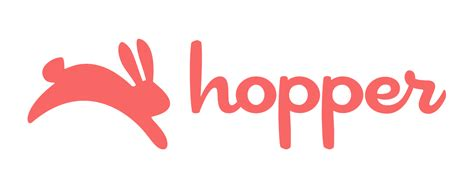
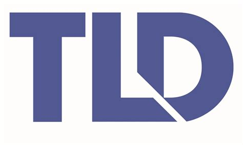
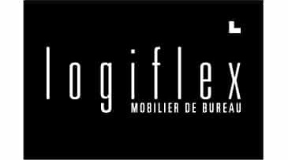

Projet: Bras robotique
J'ai conçu de toutes pièces un bras robotique dans le but d'aider à la cuisine.
C'est un robot 5 axes avec une pince comme effecteur au bout pour tenir des objets ou des outils.

Projet: Simulation d'un bras robotique robot
Pour programmer un bras robotique, il est primordial d'avoir accès à un logiciel pour simuler comment le robot va se comporter dans le monde réel.
J'ai créer un simulateur pour mon bras robotique dans le logiciel Godot. Ce logiciel est principalement utilisé pour concevoir des jeux vidéos, mais j'ai trouvé qu'il était très adéquat pour faire un simulateur!

Expérience: Cellule robotisée Kuka
J'ai de l'expérience à diagnostiquer et à réparer une cellule robotisée de la marque Kuka.
Je peux utiliser l'interface pour déplacer en manuel le bras robotique lorsqu'il s'est arrêté à une mauvaise position.
Employé autrefois par:


